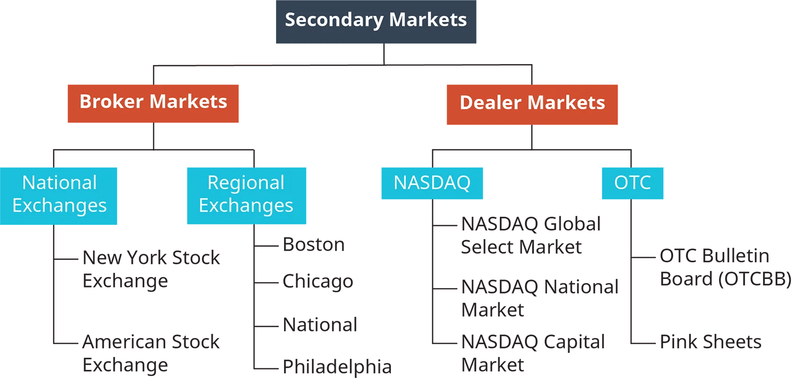

1 Introduction to Finance and Corporate Governance
Study Materials
- Dahlquist, J. R., &; Knight, R. (2022). Principles of finance. OpenStax, Rice University. https://openstax.org/details/books/principles-finance
- Chapter 1 - Introduction to Finance
- Chapter 2 - Corporate Structure and Governance
Learning Outcomes:
- Understand the fundamentals of finance, its core principles, and its key roles in an organization.
- Comprehend the importance of data and technology in financial decision-making and strategic planning.
- Explore various careers in finance and the impacts of microeconomic and macroeconomic factors on these roles.
- Understand the use of financial instruments and the concepts of time and value in finance.
- Recognize the implications of different business structures on financial management and corporate governance.
- Understand the relationship between shareholders and company management, and the associated agency issues.
- Navigate interaction with market participants and comprehend the role of companies in domestic and global markets.
1.1 What Is Finance?
1.1.1 Definition of Finance
- Finance is the study of the management, movement, and raising of money.
- It is about understanding the uses and sources of cash, as well as the concept of risk-reward trade-off.
- Finance is also a tool that can help us be better decision makers.
1.1.2 Basic Areas in Finance
- Finance is divided into three primary areas: business finance, investments, and financial markets and institutions.

Business Finance
- Business finance focuses on maximizing a firm’s value in a risky environment.

Investments
- Investments are products and processes used to create and grow wealth.
- It involves: e.g., financial instruments, regulation, and risk-and-return opportunities.
- Investments include: e.g., stocks, bonds, futures, options, mutual funds, ETFs, real assets, etc.
Financial Markets and Institutions
- Financial markets and institutions include firms and regulatory agencies that oversee the financial system.
- They facilitate investment practices and ensure investor and industry safety.
- In the US, regulatory bodies include the Securities and Exchange Commission (SEC), the Financial Industry Regulatory Authority (FINRA), and the Securities Investor Protection Corporation (SIPC).
- In Europe, The European Securities and Markets Authority (ESMA) oversees the EU’s securities market, much like the SEC does in the US. Central banks of individual countries usually serves as the country’s main financial market supervisory body.
- The finance industry has evolved significantly due to forty years of deregulation, increased competition, and adaptation to change and innovation.
1.1.3 Why We Study Finance
- Finance is essential for economic operations, facilitating things like home ownership and cashless transactions.
- A strong, independent financial system is vital for capital-based economies, enabling ease of transactions.
- Studying finance opens up a variety of professional opportunities.
- It is a critical decision-making tool requiring analytical thinking and understanding of value estimation.
- Knowledge of finance and financial markets broadens investment opportunities, encompassing traditional avenues like stocks and bonds, as well as modern ones like financial technology and cryptocurrencies.
1.1.4 Risk and Return in Finance
- Finance asserts that higher risk leads to higher expected returns, with risk essentially being uncertainty.
- Finance tries to quantify risk to aid in making appropriate risk-return tradeoffs, in both everyday life and financial decision-making.
- Individuals are generally risk-averse, implying that they expect higher returns for taking on more risk.
- Financial risk consists of several components including default risk, inflation risk, diversifiable (unsystematic) risk, non-diversifiable (systematic) risk, and political risk.

1.2 The Role of Finance in an Organization
- Finance roles in organizations vary and include:
- Controllers oversee financial reporting and accounting.
- Treasurers handle cash flow, manage external financial relationships, and borrowing and investment activities.
- The Vice President of Finance supervises the controller and treasurer and focuses on generating thorough reports.
- The CFO is responsible for making key financial decisions, strategizing financial planning, and setting financial goals.
- Financial planning is crucial for providing insights into the organization’s past, present, and future funding needs and achieving business objectives.
- Good financial planning incorporates past, current, and forward-looking income statements, cash flow statements, balance sheets, forecasting, and financial analysis tools like ratio analysis.
- Budgeting is a key part of financial planning that focuses on the amount, sources, and uses of cash.
- Financial forecasting helps manage changes to the budget, navigate deviations from expected outcomes, and serves as a foundation for future budgets.
1.3 Importance of Data and Technology
- Financial data is crucial for better business and financial decision-making by both insiders and outsiders of a firm, aiding decisions on financing projects, undertaking projects, and resource allocation.
- Basic types of financial data include income statements, cash flow statements, and balance sheets, reflecting historical costs and accounting adjustments.
- Besides internal data, firms seek external data such as customer and supplier surveys, market research, creditor agreements, and macroeconomic data.
- Data usage extends from measuring business decisions impact to enabling strategic planning and motivating teams.
1.4 Careers in Finance
- Finance careers offer lucrative opportunities with a promising job growth projection.
- Finance skills are applicable to a wide array of fields beyond traditional finance roles, including management analysis and logistics.
- Traditional finance job roles include financial manager, investment relations associate, budget analyst, credit analyst, financial analyst, personal financial advisor, loan officer, insurance underwriter, financial examiner, and finance professor.
- Financial analysts, vital for financial forecasting and market research, require a diverse skill set encompassing spreadsheet skills, financial modeling, and understanding of business processes.
- Business analysts focus more on strategic thinking, process development, and team building, aiding in strategy formulation and problem-solving using data-driven approaches.
- You can read more abou possible careers in finance at the Balance Careers website.
1.5 Markets and Participants
- The primary market is the market for “new” securities, such as initial public offerings (IPOs) and seasoned equity offerings (SEOs), which provide direct cash flow to the firms.
- The secondary market is for “used” securities, where the trading among investors provides insights into perceptions of a firm’s value.
- Market players, including dealers, brokers, and financial intermediaries, play unique roles in facilitating efficient financial transactions.
- Dealers own the securities they buy or sell and make money from trading volumes and price spreads.
- Brokers facilitate transactions between buyers and sellers, usually earning commission on sales.
- Financial intermediaries, such as commercial banks or investment companies, enable easier exchanges between transacting parties.
- Financial intermediaries increase efficiency, provide economies of scale, specialized knowledge, and are vital for a capitalist economy.

1.6 Microeconomic and Macroeconomic Matters
- Finance combines economics and accounting, leveraging economic theory, empirical evidence, and accounting data to guide business decisions.
- Economics studies the allocation of scarce resources and is divided into microeconomics and macroeconomics.
- Microeconomics focuses on individual entities’ decisions, analyzing incentives, behavior, consumption, supply, and demand. It aids in financial forecasting, planning, and budgeting.
- Macroeconomics examines group decisions, studying elements like inflation, income, economic growth, and unemployment. It involves broader variables that models can’t always capture but must be incorporated in financial forecasts.
- Macroeconomic variables like inflation, interest rates, unemployment, economic growth, the stock market, and government fiscal policy play vital roles in financial markets and forecasting.
- Financial decision makers need both micro (bottom-up, tactical) and macro (top-down, strategic) perspectives to effectively navigate towards strategic objectives.
1.7 Financial Instruments
1.7.1 Money Markets and Instruments
- The money market trades in short-term (less than one year), low-risk, highly liquid securities. Default rates are minimal, and instruments can be quickly sold in a secondary market.
- Financial institutions, corporations, and governments use the money market for short-term borrowing and/or lending needs. Transactions are usually large, exceeding $100,000.
- Treasury bills (T-bills) are government-issued short-term debt instruments. They are auctioned weekly and are default-risk-free. There’s an active secondary market for T-bills.
- Commercial paper is a short-term, unsecured debt security issued by corporations and financial institutions to finance short-term needs. Only highly-rated firms can issue them due to the unsecured nature and limited SEC oversight.
- Negotiable Certificates of Deposit (NCDs) or jumbo CDs, issued by financial institutions, are redeemable only at maturity and have a robust secondary market.
- The Federal Reserve targets the interest rate on federal funds as a significant monetary policy tool. The federal funds market involves overnight borrowing and lending among financial institutions.
1.7.2 Capital Markets and Instruments
- The capital market trades longer-term (longer than one year) financial instruments with varied default risk and less certain liquidity.
- Instruments are categorized into debt instruments (bond markets) and equity securities (stock markets).
- The federal government issues Treasury notes and bonds to raise money for current spending and repay past borrowings. T-notes are longer-term than T-bills and pay semiannual coupon interest payments.
- State and local governments can issue municipal bonds (“munis”), which carry more risk than Treasury securities but offer tax-free interest payments.
- Corporations also issue bonds for longer-term financing. A bond contract specifies the order, timing, and amount of contractual payments.
- Shares of stock represent corporate ownership. Stock cash flows are more uncertain and risky than bond cash flows due to their unpredictable nature. Stocks can be traded in organized stock exchanges or in the Over-the-Counter (OTC) market.
1.8 Concepts of Time and Value
- The choice between saving and spending is essentially a choice between present and future consumption.
- This decision involves considering short-, intermediate-, and long-term goals.
- Short-term savings focus on the safety of principal, intermediate-term investments balance return and risk, and long-term investments utilize time to recover from risks and benefit from compounding returns.
- In business, three types of value are important: book value (historical costs), market value (price consumers pay), and economic value (what consumers are willing to pay).
| 10% Annual Return | Scenario 1 | Scenario 2 | Scenario 3 | Scenario 4 |
|---|---|---|---|---|
| Starting investment age | 26 | 19 | 14 | 9 |
| Ending investment age | 60 | 25 | 18 | 13 |
| Total investments | 35 | 7 | 5 | 5 |
| Annual investment | $5,000 | $5,000 | $5,000 | $5,000 |
| Total investment amount | $175,000 | $35,000 | $25,000 | $25,000 |
| Value at age 60 | $1,490,634 | $1,466,369 | $1,838,858 | $2,961,500 |
1.9 Corporate Structure and Governance
- Business goals involve fulfilling personal financial objectives, and in publicly traded companies, increasing stockholder value.
- Shareholders are individuals seeking a return on investment for personal long-term financial goals.
- Companies focus on both financial and nonfinancial goals, including sales expansion, customer satisfaction, and product development.
- Asset value is determined by the present value of future cash flows.
- Maximizing shareholder wealth requires a long-term view and decisions may not immediately affect stock prices.
- In privately owned entities, the long-term growth and value maximization is equally important to the owners.
1.10 Business Structures
- The four common forms of business organizations are sole proprietorships, partnerships, corporations, and hybrids like LLCs and LLPs.
- Sole proprietorships are unincorporated businesses owned by a single person with advantages such as simplicity and fewer regulations but also have unlimited personal liability.
- Partnerships involve a legal arrangement between two or more people, offering diverse expertise and easier capital collection but also carry unlimited personal liability.
- Corporations are a separate legal entity from their owners and managers, offering advantages such as unlimited life, easier capital raising, and limited owners’ losses, but subject to double taxation.
- Hybrid forms like LLCs and LLPs have elements of both a corporation and a partnership, providing principals with liability protection and are taxed as partnerships.
- An organization must evaluate the pros and cons when choosing its structure, including the ability to raise funds, the effects of taxation, and liquidity.
1.12 Agency Issues: Shareholders and Corporate Boards
- Agency problems occur when a manager uses their position for personal gain instead of acting in the best interest of the shareholders. This can negatively impact company profits and shareholder goodwill.
- Three types of agency problems include: Stockholders versus Management, Investors versus Creditors, and Stockholders versus Other Stakeholders.
- Segregation of ownership and management can help to avoid agency problems but can also lead to self-serving decisions by external managers.
- Creditors may devalue a company’s debts if it undertakes risky investments, leading to agency problems between investors and creditors.
- Shareholders might conflict with other stakeholders in a company, like employees, leading to declining business performance.
- Solutions to agency problems include offering incentives for ethical behavior, penalizing poor performance, and aligning goals of management and ownership.
- The threat of a hostile takeover can also discourage agency problems by making management act in the best interests of shareholders.
- Environmental, Social, and Governance (ESG) ratings, provided by third-party organizations, are being increasingly used by the investment community to evaluate companies. High ESG ratings can indicate proactive management and potential long-term value.

1.13 Interacting with Investors, Intermediaries, and Other Market Participants
- Investor Relations (IR) is a corporate public relations subdivision aimed at maintaining open relationships with shareholders.
- IR, with strict regulatory obligations, requires close collaboration with legal and accounting departments.
- Responsibilities include organizing shareholder meetings, disseminating financial data, conducting briefings, and managing financial disclosure issues.
- Regular quarterly earnings conference calls and reports provide transparency to the investment community.
- Annual shareholder meetings and investment conferences are important for effective investor relations, requiring a clear and engaging investment story.
- Press releases, a crucial tool in IR, convey various corporate news and should be easily understandable and multimedia-enhanced when possible.
1.14 Companies in Domestic and Global Markets
- Domestic companies operate primarily within the US, adhering to US accounting and securities laws, with financial reporting using Generally Accepted Accounting Principles (GAAP).
- International firms are US-based but have significant international operations, with parent company accounting adhering to GAAP, while non-US subsidiaries may follow host country laws and regulations.
- Global firms operate in various countries, with corporate governance determined by the laws of the parent company’s country, and financial reporting usually follows International Financial Reporting Standards (IFRS).
- GAAP and IFRS, although designed to provide unbiased financial reporting, differ significantly, impacting areas like inventory accounting, subsidiary consolidation, and minority interest reporting.